地政学
サンフアンは米自治領プエルトリコの首都で、連邦制度、島内政治、カリブ海航路、米本土との移動が交差します。港と空港は観光だけでなく、物資、軍事史、災害復旧を支える結節点です。自治の議論も日常に響きます。
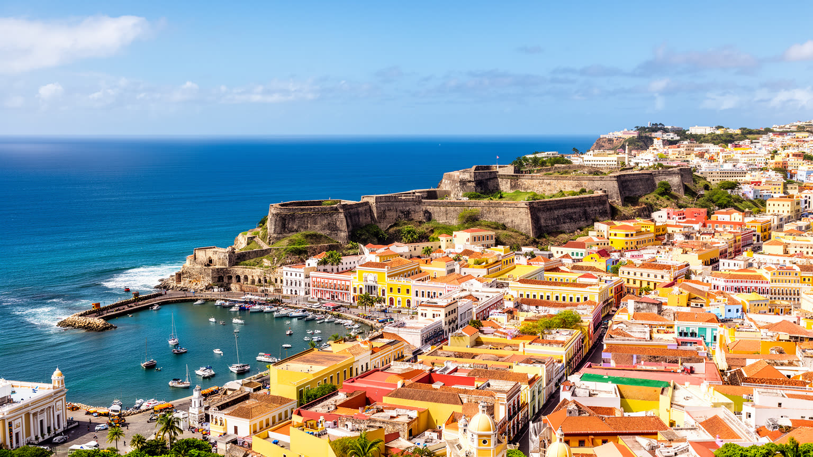
🇵🇷 プエルトリコ / カリブ海 / World City Atlas
大西洋とカリブ海を結ぶ港湾首都。スペイン植民地期の要塞、米自治領の制度、観光、医療、大学、音楽、信仰、停電と復興の記憶が同じ都市圏で重なります。
都市の骨格
サンフアンは城壁内の旧市街だけでなく、港、空港、大学病院、郊外住宅、海岸観光地を抱える広い首都圏です。植民地の記憶と米国制度、カリブの生活が湾の周囲で接続しています。
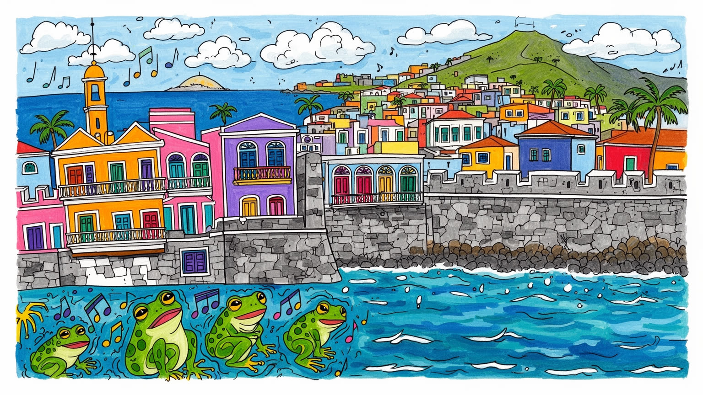
サンフアンは米自治領プエルトリコの首都で、連邦制度、島内政治、カリブ海航路、米本土との移動が交差します。港と空港は観光だけでなく、物資、軍事史、災害復旧を支える結節点です。自治の議論も日常に響きます。
港湾、観光、医療、大学、行政、金融、小売、建設、クリエイティブ産業が雇用を作ります。一方で賃金、家賃、停電、移住、非正規労働は家計を揺らし、米本土との往来が働き方を変えます。若者の流出も課題です。
カトリックの暦、プロテスタント教会、アフロカリブの記憶、サルサ、レゲトン、祭り、野球、食卓が都市のリズムを作ります。スペイン語の生活と英語の制度が並び、音楽は島の歴史を街角へ運びます。祈りも歌も続きます。
訪問者は旧市街、要塞、海辺、飲食を楽しみますが、住民には停電、住宅費、医療、学校、交通、洪水、観光地化が日々の問題です。観光の成功は、暮らす人が街を使い続けられるかで決まります。海風の裏も読む都市です。
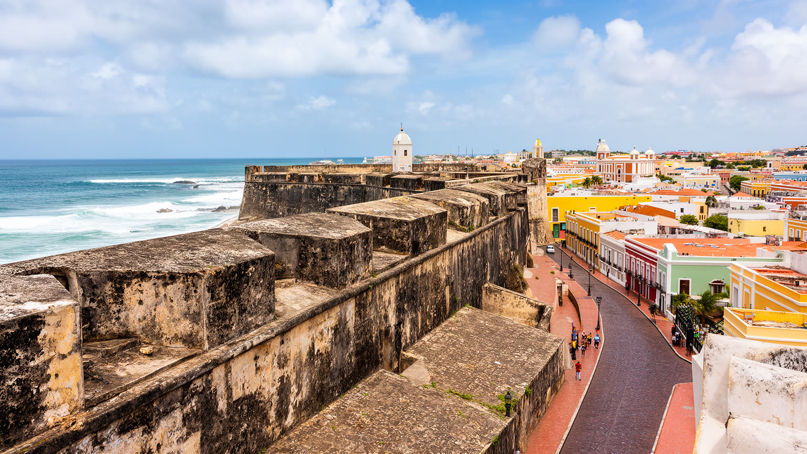
サンフアンの都市としての出発点は、湾の入口を押さえる軍事と海上交通の地理にある。旧市街は細長い島状の地形に築かれ、城壁、堡塁、門、石畳の街路が港を見下ろす。スペイン帝国にとってここは新大陸へ向かう船団を守る拠点であり、砂糖、銀、兵士、聖職者、移民、病気、情報が行き交う通過点でもあった。今日の要塞は観光名所として整備されているが、単なる過去の装飾ではない。都市の向き、道路の曲がり、広場の位置、港湾の機能、軍事施設の記憶を今も決めている。旧市街の外へ出ると、港湾倉庫、クルーズ船、フェリー、橋、幹線道路が湾の周囲に続き、歴史地区と現代物流が近接する。海に開いた都市であることは、観光の明るさだけでなく、輸入依存、燃料価格、災害時の物資搬入にも関わる。サンフアンを見る時は、色彩のある家並みだけでなく、湾を守る高低差、船の動線、倉庫の背後の労働まで読む必要がある。要塞の石は都市の美しい輪郭であると同時に、カリブ海をめぐる帝国、貿易、防衛の記憶を閉じ込めている。海風は解放感を運ぶが、港は常に外部への依存も示している。湾があるからこそ都市は栄え、湾に依存するからこそ燃料、食料、観光客の流れに弱くなる。夜に灯る城壁と岸壁は、祝祭の景色であると同時に、見張り、通関、積み替え、修理を続ける実務の場所でもある。
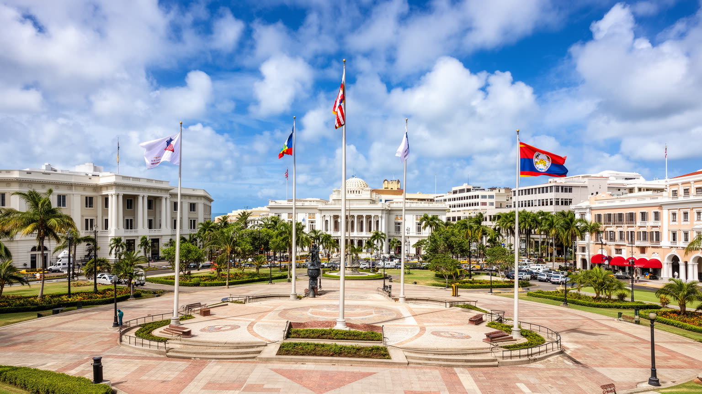
サンフアンはプエルトリコの首都であり、同時に米国の州ではない自治領の制度を日常に抱える都市である。総督府、議会、裁判所、連邦機関、大学、報道機関、抗議の場が旧市街と新市街の近い範囲に集まり、島の政治的選択が街路へ現れる。州昇格、独立、現状維持をめぐる議論は抽象的な憲法論だけではなく、医療保険、災害支援、税制、連邦資金、投票権、移住、教育の言語に関わる。住民は米国市民でありながら、大統領選挙の本選挙で同じ形の票を持たず、米本土へ移れば政治参加と雇用条件が変わる。この制度のずれは、家族の進路、若者の移住、企業の投資、行政の財政へ影響する。サンフアンの首都性は、記念碑的な建物よりも、連邦と島政府の手続きが混じる窓口、デモ、報道、裁判、予算の議論に表れる。ハリケーン後の復旧や債務危機では、自治の範囲と外部からの監督が生活の速度を左右した。首都を読むことは、政治的地位が住民の家計、医療、道路、学校、停電対策へどう届くかを読むことでもある。制度は遠い言葉ではなく、街路の修理が遅れる理由にも、奨学金や病院の財源にもなる。サンフアンでは国旗と地域旗、スペイン語と英語、島の誇りと米国制度が、同じ役所の廊下で交差している。だから政治の選択は、選挙の日だけでなく、毎月の請求書、学校の予算、親族が本土へ移る判断にも表れる。
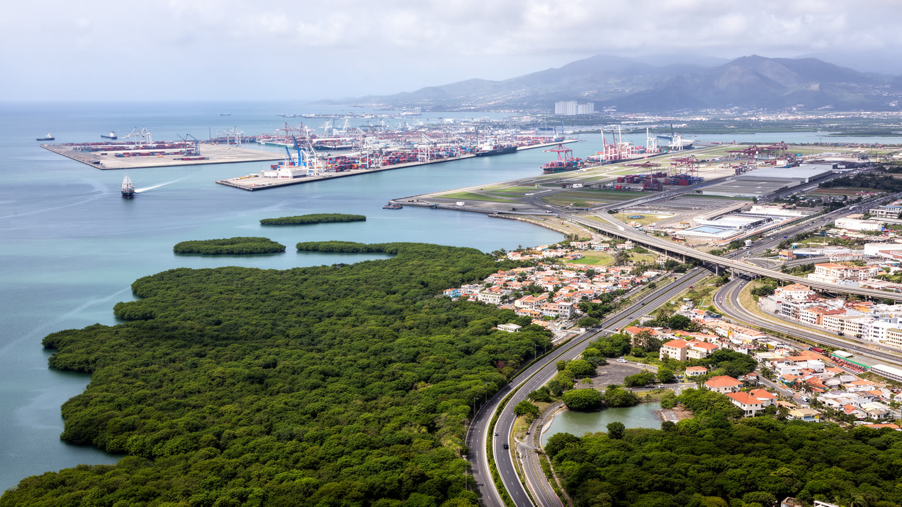
サンフアンの港と空港は、観光客の入口である前に、島の生活を外部へつなぐ基盤である。プエルトリコは多くの物資を輸入に頼り、食料、燃料、医薬品、建材、車、消費財が海上輸送に左右される。港湾で働く人、トラック運転手、倉庫、税関、配送業者、小売店は、観光地の表側からは見えにくいが、家庭の棚や病院の薬を支えている。空港は米本土、カリブ諸島、ラテンアメリカへの移動を結び、家族の往来、学生の進学、医療目的の渡航、ビジネス、観光を同時に扱う。ハリケーンや停電で港と空港が混乱すれば、都市だけでなく島全体の生活が揺らぐ。クルーズ船の寄港は旧市街の飲食や土産物店に収入をもたらす一方、短時間滞在の消費は地域経済に残る額が限られることもある。空港周辺や港湾道路では、騒音、交通、倉庫用地、海岸の開発をめぐる調整も必要になる。サンフアンを物流都市として読むと、海辺の美しい景色の背後に、輸入依存と災害時の脆さが見えてくる。島の首都にとって接続性は贅沢ではなく、医療、食事、復旧、家族のつながりを保つ条件である。港湾の効率、空港の便数、道路の復旧速度は、都市の競争力であると同時に、住民の安心を左右する生活指標でもある。外へ開く玄関が強いほど、外の市場と政策に揺さぶられる現実も大きくなる。港と空港の混雑は、島の孤立感と開放性を同時に映す。
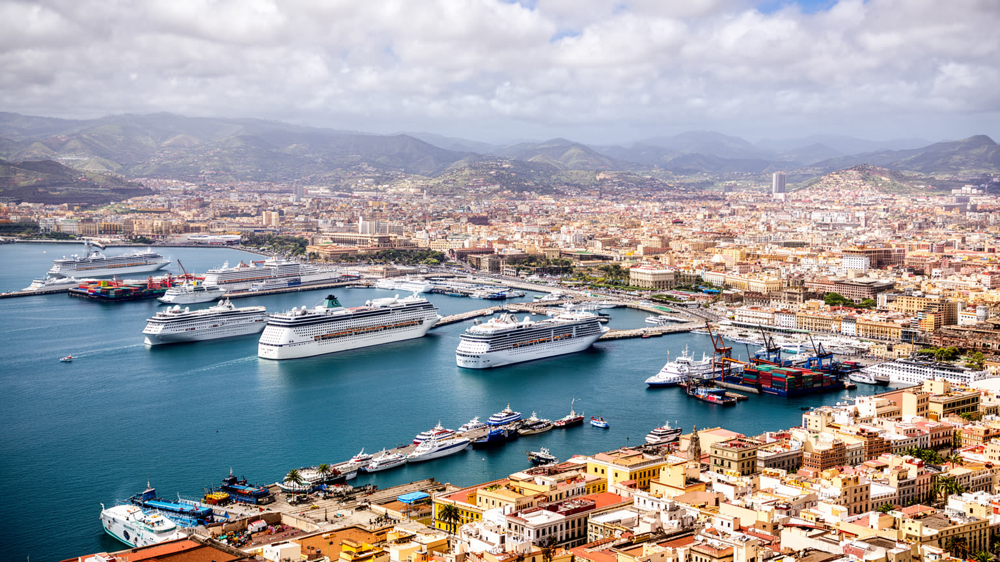
旧サンフアンは、色彩のある家並み、石畳、要塞、教会、広場、海の眺めによって、カリブ海でも強い観光磁力を持つ地区である。けれども観光地としての美しさだけを見ていると、そこが行政、住居、学校、教会、小売、夜の飲食、清掃、警備、修復作業を抱える生活の場所であることを見落とす。クルーズ船が到着する時間には通りの人流が変わり、短期滞在者向けの店や宿が増えるほど、住民向けの家賃や日用品の価格にも影響が出る。歴史的建築の保存には、塗装、排水、電線、湿気、ハリケーン対策、所有権、修理費の問題がつきまとう。観光収入は職を生むが、サービス職の賃金や勤務時間は必ずしも安定しない。夜の音楽と飲食は都市の魅力である一方、騒音、混雑、廃棄物、治安管理の負担も生む。旧市街を健全に保つには、訪問者の視線に合わせて景観を磨くだけでなく、住む人が市場、学校、医療、公共交通を使える状態を守る必要がある。サンフアンの観光は、街を舞台装置にするほど脆くなる。生活と遺産と商業が同じ路地に残るからこそ、旧市街は単なる写真の背景ではなく、都市の厚みを持つ。石畳を歩く楽しさは、そこで毎朝店を開け、子どもを送り、修理を続ける人の時間に支えられている。観光の成功は、滞在者の満足だけでなく、地区の住民が追い出されずに暮らせるかで測る必要がある。
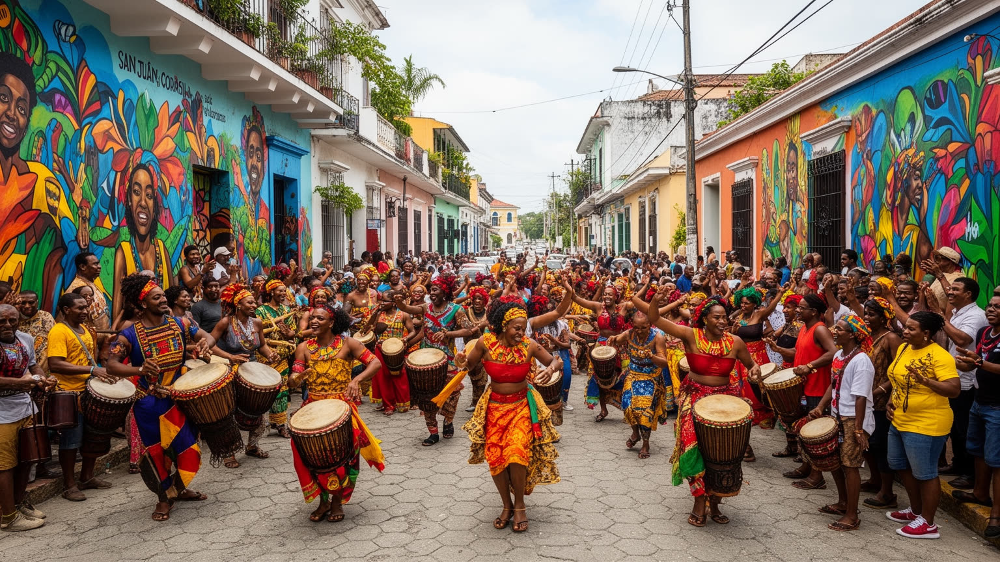
サンフアンの文化は、植民地都市の石造建築だけでなく、音楽、信仰、食、スポーツ、言語の混ざり方に表れる。カトリックの教会暦、プロテスタント教会、アフロカリブの宗教的記憶、家族の祈りは、結婚式、葬儀、祝祭、慈善、地域の助け合いへつながる。サルサ、ボンバ、プレーナ、レゲトンは、島の階級、移民、黒人性、都市の若者文化、米本土との往来を音にする。クラブや路上の音楽は観光資源にもなるが、住民にとっては家族史、政治的主張、近所の誇りを表す方法でもある。野球やバスケットボール、学校の行事、祭りの屋台、年末の集まりは、都市の暦を作る。スペイン語が生活の基本でありながら、英語は行政、観光、教育、医療、仕事の場に入り込む。二つの言語の間で育つことは力にも負担にもなる。文化産業は映像、音楽、デザイン、料理、ファッション、イベントを生み、若者に仕事を与える一方、著作権、賃金、家賃、夜間経済の安全という課題も抱える。サンフアンの文化を読むには、有名な曲や祭りだけでなく、教会の炊き出し、家族の集まり、地区の小さな演奏、学校の練習を見る必要がある。祈りとリズムは、観光客を楽しませる装飾ではなく、危機を経験した都市が自分を結び直す方法である。音が街から消えないことは、住民が記憶と誇りを手放していない証でもある。文化は消費される商品である前に、互いを確認する日常の言葉である。
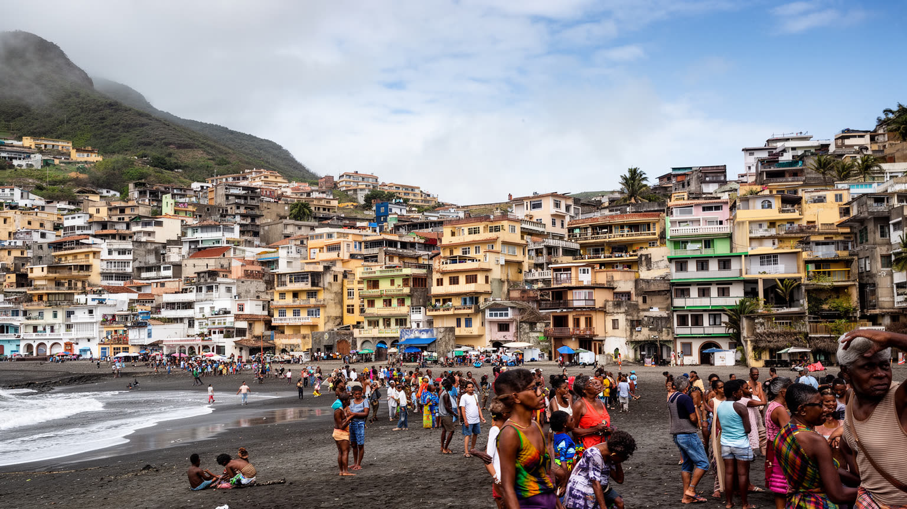
サンフアンの暮らしは、海辺の明るいイメージと住宅不安が同時に存在する。旧市街、コンダード、イスラ・ベルデのような観光地や高所得者向け地区では、短期賃貸、ホテル、飲食、海岸の魅力が不動産価格を押し上げる。一方、内陸や郊外には老朽住宅、洪水リスク、公共交通の弱さ、所得の低さ、修理費の不足に悩む世帯がある。ハリケーン後には屋根、電気、水、保険、所有権書類、連邦支援の手続きが復旧の速度を左右した。米本土からの移住者や投資家が増えると、税制優遇やドル建ての資金力によって家賃が上がり、地元の若者や高齢者が住み慣れた地区から押し出される不安も強まる。住宅は単なる市場商品ではなく、家族、近所の助け合い、通学、通院、仕事へのアクセスを支える基盤である。観光収入が増えても、サービス職の賃金が住宅費に追いつかなければ、都市は働く人を遠ざける。サンフアンを生活都市として見るには、海岸の再開発だけでなく、排水路、バス停、学校、食料品店、病院までの距離を重ねて読む必要がある。住まいの格差は、災害時にさらに大きくなる。頑丈な建物と保険を持つ世帯は早く戻れるが、書類や貯蓄のない世帯は長く不安定な状態に置かれる。海風の魅力を守るためにも、住民が残れる住宅政策と防災投資が不可欠である。都市の美しさは、そこに働く人が住める時にだけ持続する。
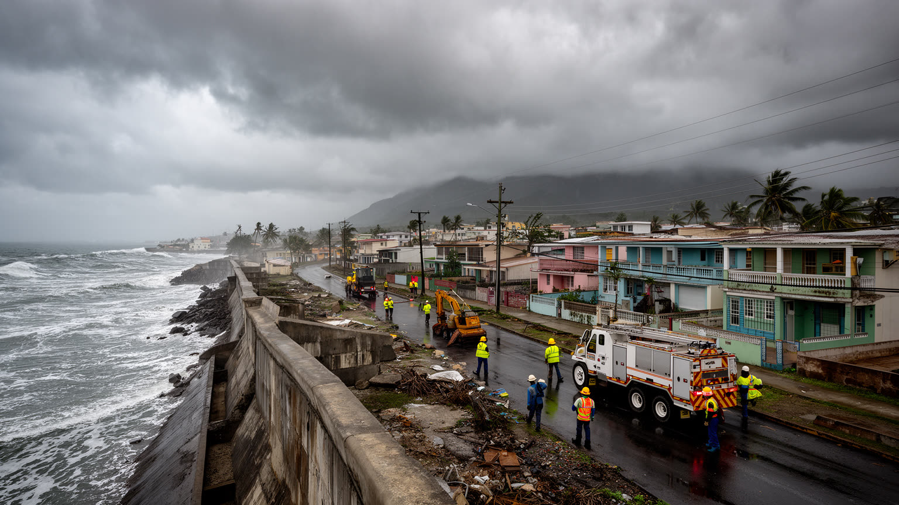
サンフアンの都市生活を語るうえで、ハリケーン、豪雨、高潮、停電は避けられない。強い暴風雨は屋根、窓、道路、送電線、通信、港、空港、病院に被害を与え、首都圏の機能が島全体の復旧速度を左右する。電力網の不安定さは、冷蔵庫の食料、在宅医療、エレベーター、学校、店の営業、信号、携帯電話の充電まで影響する。発電機や蓄電設備を持てる世帯や施設は耐えやすいが、低所得世帯、高齢者、病人、集合住宅の住民は停電の負担を強く受ける。豪雨では排水の弱い地区が浸水し、海岸や低地では気候変動による海面上昇も長期的な不安になる。災害対策は堤防や送電線だけでなく、避難所、近所の連絡網、医薬品の備蓄、多言語情報、障害のある人への支援、ペットを含む避難計画まで含む。ハリケーン後の復旧は、行政、連邦資金、民間電力会社、地域団体、教会、住民の自助が複雑に絡む。サンフアンの強さは、被害を完全に避けることではなく、被害の後に誰を早く見つけ、どの道路を開け、どの病院を動かし、どの家庭へ水と電気を戻すかに表れる。災害は平等に来るように見えて、被害は平等ではない。だから復旧力を測るには、中心部の早い再開だけでなく、見えにくい地区の停電日数、保険の有無、医療への到達を見なければならない。復旧の速さは、平時の格差をそのまま映す都市の鏡である。
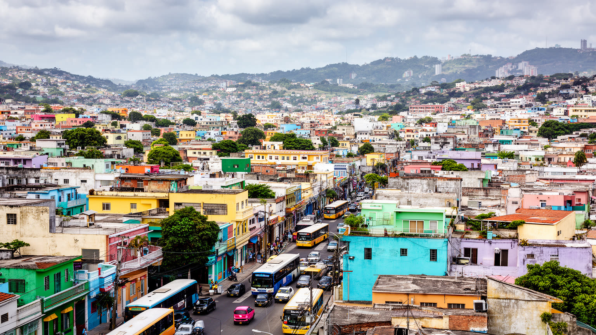
サンフアンの社会は、米本土との移動なしには理解しにくい。ニューヨーク、オーランド、フィラデルフィア、シカゴなどに暮らすプエルトリコ系の家族と島内の親族は、航空便、送金、電話、介護、進学、季節の帰省で結ばれている。若者は大学や仕事を求めて島外へ出ることがあり、医師、看護師、技術職、教師の流出は公共サービスにも影響する。一方で、本土で働いた人が戻り、貯蓄や経験、英語力、起業の考えを持ち込むこともある。移住は機会であると同時に、家族の分断、介護の空白、地域の人口減少、住宅市場の変化を生む。サンフアンの空港は、観光客の玄関であるだけでなく、別れと再会の場所でもある。災害後には一時的に本土へ避難した人が戻れなかったり、親族が物資や資金を送ったりする。島の経済が不安定になるほど、家計は複数の場所に分かれてリスクを分散する。こうした往復の生活は、都市の言語、食、音楽、政治意識を変える。サンフアンでは、地元に残ることと外へ出ることが対立ではなく、同じ家族の中で併存する選択になる。都市の将来を考えるには、人材を引き止めるだけでなく、戻りやすい仕事、住まい、学校、医療、文化の場を整える必要がある。移住の流れを弱さとしてだけ見ると、広がった家族ネットワークが都市を支える力を見落とす。島外にいる人々の記憶と資金も、サンフアンの生活を静かに支えている。
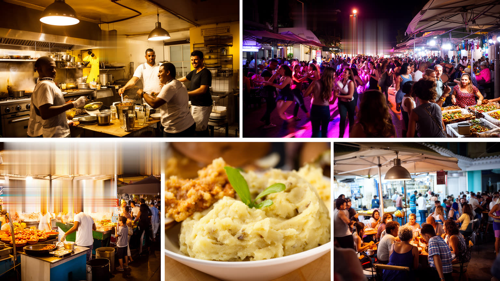
サンフアンの食と夜の街は、観光の楽しみであると同時に、島の歴史と労働を映す。モフォンゴ、米料理、豆、豚肉、魚介、プランテン、コーヒー、ラム、屋台の軽食、家族の煮込みは、タイノ、スペイン、アフリカ、米国、カリブの影響を日常の皿に重ねる。旧市街や海辺の飲食店、バー、音楽の場は観光客を集め、料理人、皿洗い、配達、清掃、演奏者、警備、タクシー運転手に仕事を生む。しかし夜間経済は、長時間労働、チップ依存、騒音、治安、飲酒、交通、家賃上昇の問題も伴う。食材の価格は輸入、燃料、港湾、天候に左右され、停電は冷蔵と営業を直撃する。観光地の華やかな食体験の背後には、朝の仕込み、家族経営、英語での接客、保健規制、廃棄物処理、音楽家の出演料交渉がある。サンフアンを食から読むと、都市が外から来る人を迎えながら、住民の昼食、祝い、仕事帰りの一杯をどう支えているかが見える。料理は文化の記号である前に、物流と家計の結果でもある。名物を守るには、店のブランドだけでなく、市場、漁港、農家、調理人、店員が続けられる条件が必要になる。夜の街が魅力を保つには、訪問者の消費と住民の睡眠、働く人の安全を両立させなければならない。味と音楽はサンフアンの入口だが、その裏側には都市運営の細かな調整がある。皿の上の豊かさは、港、畑、台所、舞台を結ぶ長い仕事の連鎖で支えられる。
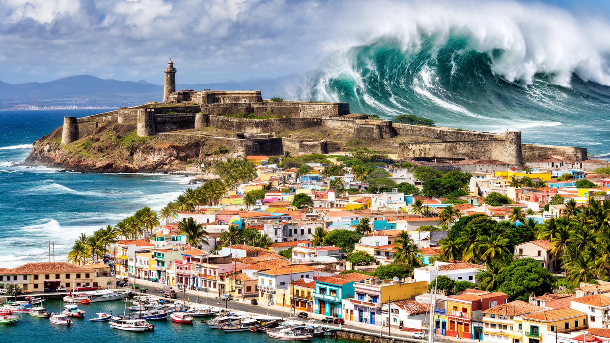
サンフアンは、カリブ海の美しい港町という一枚の絵に収まりきらない。旧市街の要塞、クルーズ船、海岸のホテル、大学病院、総督府、連邦機関、郊外住宅、停電に備える発電機、教会、音楽の場、空港の出発ロビーが、同じ都市圏でつながっている。スペイン植民地の記憶、米自治領の制度、島の誇り、英語とスペイン語の併存、観光経済、医療と教育、住宅格差、ハリケーン復旧は互いに切り離せない。経済統計を見るだけでは、短期滞在者に開かれた都市と、住民が家賃や電力に悩む都市の差が見えない。遺産を見るだけでは、港湾労働、看護、大学の財政、若者の移住、災害時の近所の支援が見えない。サンフアンを読むには、湾の地理から制度、産業、文化、住まい、災害までを重ねる必要がある。この都市の重要性は、巨大な人口や金融規模ではなく、カリブ海の島嶼社会が世界経済、米国制度、気候危機、観光とどう向き合うかを具体的に示す点にある。海風と音楽の明るさは本物だが、その明るさは復旧を待つ家庭、二つの言語で働く人、島外の家族からの支援、古い建物を直す手によって支えられている。サンフアンの魅力を誠実に見ることは、観光の輝きと生活の不安を同時に見ることである。港に入る光、教会の鐘、夜の音楽、停電時の暗さまで含めて初めて、この首都の輪郭が立ち上がる。そこに島の現在が見える。